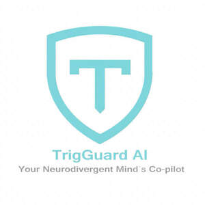

Trade Mark Journal No.2025/033 15 August 2025
UK00004239345 25 July 2025 (9,35,42,44)

- Class 9
- Downloadable computer software; computer application software for personal productivity; software for scheduling and workflow optimisation; computer software for time management and organisation; computer software for emotional regulation and cognitive support (non-clinical); software for tracking behavioural patterns and user interactions; business productivity software.
- Class 35
- Business consultancy services relating to time management; advisory services for workplace organisation; provision of business information relating to employee wellbeing and productivity; business assistance services related to workflow optimisation.
- Class 42
- Software as a service [SaaS] featuring non-downloadable software for executive function support and wellbeing tracking; Platform as a service [PaaS] for emotional and behavioural analysis; hosting of platforms for neurodivergent productivity and burnout support; development of computer platforms for self-regulation and focus enhancement; design and development of non-clinical cognitive support software; provision of temporary use of non-downloadable software for productivity management.
- Class 44
- Advisory services relating to mental wellbeing; provision of online information in the field of emotional regulation and stress management; wellness support services delivered via digital tools, excluding medical or therapeutic treatment; providing online resources for non-clinical mental health and emotional self-care.
TrigGuard AI Limited